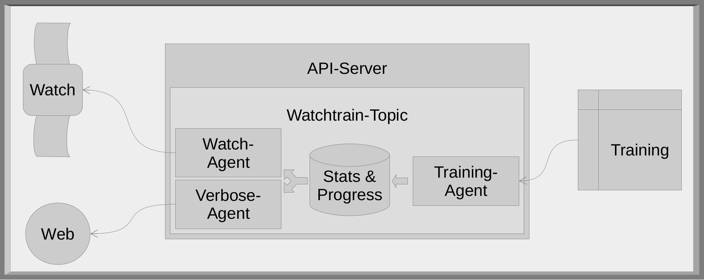
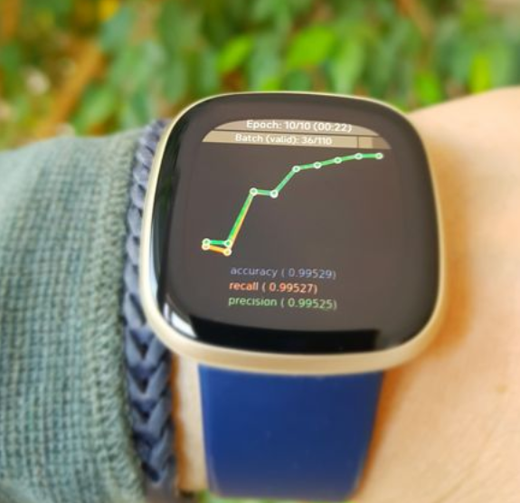

🏔️
During the Covid winter I hardly had any reason to leave the house. It was clear that I actively had to look after my mental and physical well-being. So, I decided to buy a smart watch (Fitbit Versa 3) and take on the 10000 steps per day challenge. Henceforth I spent much more time outside and in the sunlight moving my body.
⛅
When I registered my new Fitbit I instantly got attracted by the For Developers link. As you might guess my thoughts started spinning like - Aha, they are providing a SDK! I got to try this out at some point and build an app for the watch. - I wanted this app to be related to ML or at least to data somehow. My first thought was - Would it be possible to use the green heart-rate sensor light as an OCR? - Nope, to complicated for a fun project. - Then I went on with the registration of the watch on the webpage.
🌤️
Some month later, on a usual Sunday, I lay resting on the couch after lunch while the kids and my wife were cleaning the table and kitchen (I did the cooking ;-)). A little bored, I thought of my ML-model that was training on Hotel Room classification for a couple of hours upstairs in the office. I wanted to know how it was preceding. Sneaking upstairs would result in half an hour in front of the computer, followed by some trouble with my wife 😒. - May by I should eventually register at Neptune.ai or wandb.ai, then I could preview my trainings from the couch on my cell phone!? … Or may be I now have a new fun project for my new watch 😄 💡! -
User story
Those were the requirements that finally got implemented: - Statistics (for metrics and losses) need to be captured during the training, so that I can see if training improves. - Progress of training needs to be captured and made available to the watch instantly, so that I can estimate how long the training will take to finish. - Stats & progs should be processable in pytorch and fastai trainings, so that I can use my preferred ML libraries. - The watch plots the metrics history of the current training as line chart. so that I can quickly see if training improves on which metric. - The metrics values should be plotted, so I can easily compare with former trainings. - Progress on epochs and batches (train and valid) are plotted, so I can easily estimate how long the remaining training steps will last.
As by-product the training progress can also be displayed on a browser. This feature was build in parallel for debugging purpose.
Architecture
API-Server
The requirements led to the architecture shown in the diagram. In the center of the application is an API-Server to coordinate the training and the watch. The Training, Watch and Web are client applications connected to the API-Server’s Watchtrain-Topic. The Topic contains a connection pool for the Training client (data Producer) and another connection pool for the Web and the Watch clients (data Consumer).

The initial idea was to setup a classical Consumer/Producer (Pub/Sub) pattern. But it ended up a bit different. The Topic holds the data in an object rather than a queue-like state and also does some data processing. The Producer and Consumer can still subscribe at any time, but they are also strongly connected via Websockets. I took the chance to play around with websockets, since it is also available on the watch.
For each client type there is an Agent that processes the data and messages that are send from the clients. The stats and progress data is saved in the topic. The topic generates the metric chart that is send to the Consumers, since I couldn’t find a charts library in the watch SDK.
The Topic-Consumer-Producer-Agent “pattern” with the connection pool handler is set up in a generic way so it’s easy to develop other applications in the same manner and run them on the API-Server.
As API-Server I used FastApi which is easy to start with as shown on the tutorial site or in this video.
The communications between the components is done with JSON. Messages start with an action-field followed by the training_id and a more or less complex payload. Depending of the action value different functionalities are triggered, such as sending the metric image to the client or converting batch information into a progress bar.
Training
Fastai
The easiest way to implement the train logging is by using the Fastai Callback infrastructure. So I built a WebsocketLogger which gets past to the training like this:
learn = cnn_learner(dls, resnet18, pretrained = False, metrics=[accuracy,
Recall(average='macro'),
Precision(average='macro')])
learn.unfreeze
learn.fit_one_cycle(10, lr_max = 5e-3, cbs=[WebsocketLogger('ws://myapiserver:8555/ws/watchtrain/producer/12345')])Starting out by looking at the source code of the fastai build-in CSVLoggers and ProgressCallback I learned how to track train data (metrics, epoch and batch progress). A bit challenging was the integration of the websocket client. I preferred a permanent connection rather than many one time (open-send-close) connections. Otherwise a simple REST call would have been more suitable. It is also very important that training must not break when the websocket connection is lost or the API-Server isn’t available anymore.
That’s how it is implemented using the websocket-client library:
def __init__(self, conn, ...):
self.conn = conn
...
self.heartbeat = False
self._ws_connect()
...
...
# gets called when a websocket is opened
def _on_ws_open(self,ws):
# ws connection is now ready => unlock
self.ws_ready_lock.release()
self.heartbeat = True
def _ws_connect(self):
self.heartbeat = False
# aquire lock until websocket is ready to use
self.ws_ready_lock = threading.Lock()
self.ws_ready_lock.acquire()
print('Connecting websocket ...')
self.ws = websocket.WebSocketApp(self.conn,
on_open = self._on_ws_open,
on_message = self._on_ws_message,
on_error = self._on_ws_error,
on_close = self._on_ws_close)
# run websocket in background
thread.start_new_thread(self.ws.run_forever, ())
# wait for websocket to be initialized,
# if connection is not possible (e.g. APIServer is down) resume after 3 sec, but heartbeat stays FALSE
self.ws_ready_lock.acquire(timeout = 3)
print('... websocket connected.')The WebSocketApp runs as a local websocket-handler in the background. The Locks are used to make sure the connection gets properly established before the first messages are send. The heartbeat is introduced to keep the training running even if the websocket connection is broken and could not be reconnected via WebSocketApp.
If there is no heartbeat anymore _ws_connect() is called again after any epoch. If the API-Server is still not reachable the training continuous after a 3 second waiting time.
Pytorch
I skipped the pytorch implementation until I need it. But it is straight forward. Start a WebSocketApp thread in the background. Send the data from inside of the training/validation/inference-loop.
Watch

The layout is held pretty simple as shown in the picture. There is a progress bar for the epochs and one for the mini batches (train and valid). In the center is the chart of the metrics. And at the bottom are the latest metric values. The cell phone that belongs to the watch establish a websocket connection to the API-Server and puts EventListeners for incoming messages into place. The incoming messages are uploaded to the watch were they can be displayed.
Lessons learned
FastAPI
FastAPI is a well-documented and easy to use framework. In the beginning I set it up with HTTPS. There is a tutorial on how to setup FastAPI with Traefik. But since I wanted to run the server at home I had to invest some evenings to figure out, how to set it up by myself. I used mkcert for SSL creation. A docker file to setup an FastAPI-Server at home can now be found here. At the end when I got it working I decided to not use HTTPS for reasons described below, 🤷♂️.
Websockets
The different components communicate instantly. The data is pushed to the watch, which is the preferred behavior on the receiving site. With the websocket on the training site it is a bit more complicated to be fail safe and pickup communication when the connection is broken for a longer period of time. I might switch this part to a simple REST-post in a later version. But this way it was a fun exersice nevertheless.
Fitbit SDK
The Fitbit SDK is nice. They provide an online IDE which can easily be connected to your devices. The SDK is documented with a few examples. They also host helpful forum.
I had a bit of a hard time when I tried to load and display the Metrics chart image to the watch. I had to figure out that there are two types of jpeg, progressive and basic. And only one worked. It also was hard to figure out that the the image needs to have a certain size to be displayed. But that’s part of the normal learning path with a new technology.
And than, there was this one thing that really upset me (But as fare as I read in forums it is not the Fitbit SDKs fault!). Android doesn’t allow regular HTTP connection through apps. That’s why I setup the API-Server with HTTPS. But since I generated the certificate on my own, it wasn’t a trusted source and therefore Android didn’t accept it. Then I found some post that showed how to access HTTP from a local net, but only for IP range 192.168.0.x. That meant either building a Reverse Proxy or changing the Subnet of my network. And then finally I needed to deal with the docker net-addresse where the API-Server is running. As suspected, one evening I freaked out - ?#@!, I just want to send a JSON to my cell phone! 30 years of web-development and all we ended up is JavaScript and SSL-certs @!# - That was a good time to go to bed, put the project aside for a few days and celebrate that most of the time I’m into data instead of GUI 😁.
Besides that I really enjoyed it to build a nice app for my Fitbit.
Conclusion
It was a fun project! Websockets, API, ML, App on a watch, it all fits together. I still have a thousand ideas for improvements and features. But for now I leave it as it is.
Implementation
The code for this project can be found in this repository: https://github.com/joatom/watchtrain
References
Here is a list of my inspirations, templates and useful content listed by topic.
Fitbit SDK
- Online IDE (there also is a CLI version for VScode)
- Tutorials
FastAPI
- FastAPI’s tutorials
- FastAPI and websockets
- Docker setup
- FastAPI with Traefik
- Video Tutorial for using FastAPI to serve ML models
Training
Others